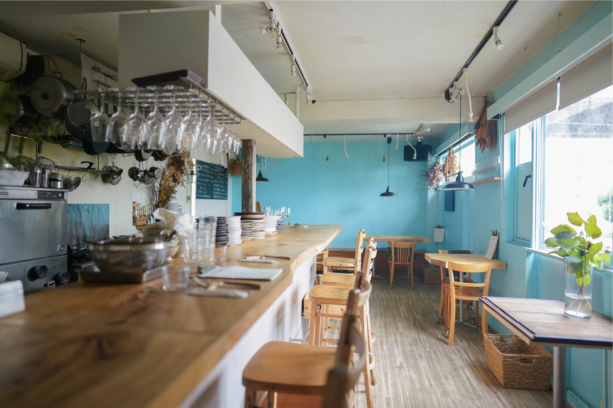

ふわりと漂う湯気と香ばしい匂いのお出迎え。
そこは、誰もが帰ってこられるみんなの食卓。
自然の落ち着きとカフェのくつろぎを備え、定食屋として人々の暮らしに寄り添い続けてきた。
ふわりと漂う湯気と香ばしい匂いのお出迎え。
そこは、誰もが帰ってこられるみんなの食卓。
自然の落ち着きとカフェのくつろぎを備え、定食屋として人々の暮らしに寄り添い続けてきた。

旬の野菜が並ぶ厨房、炊き立てのご飯の音、「おかえり」と言いたくなる温かな空気。
ここで過ごす時間は、あなたの日常を少しだけ特別にしてくれる。
食事は人をつなぎ、心を満たすもの。
その想いを胸に、今日も私たちは一皿一皿を丁寧に重ねている。

お店に入って右側にある洋風の空間は、木の温もり漂うくつろぎの場。コーヒーの香りに包まれ、軽食や喫茶メニューを気軽に楽しめます。街角カフェのような親しみやすさで、ゆったりとした時間を過ごせます。
お店に入って左側にある和風の空間は、畳と木の質感が心地よい場。やわらかな照明に包まれ、和の趣を感じながらお茶や甘味を気軽に楽しめます。旅先の茶屋のような親しみやすさで、静かな時間を過ごせます。
洋風の空間
テーブル26席(8卓)/
カウンター8席
和風の空間
テーブル28席(8卓)